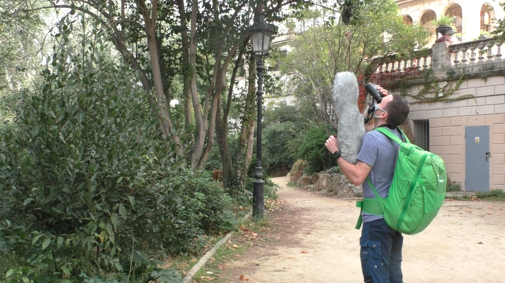

I work with social and vocal complexity in parrots. I try to understand if parrots living in a more complex social context develop more complex vocalisations. For this I study the monk parakeet, which is an invasive species in many European cities. Furthermore, I study how vocal systems coevolve with social systems. Looking at the same question from an ultimate perspective. Besides doing comparative analysis of parrots at the species level, I will again use monk parakeets to see if there is a signal of cultural evolution of vocal systems. I will compare populations in Europe with different invasion histories to see if new or altered vocalisations are innovated and retained in the population.
More broadly I’m interested in understanding how and why cumulative cultures evolve. I’m especially interested in how communication systems can evolve, both in a species, but also how they can different between populations. To better understand this I would love to study the ontogeny of a vocal repertoire both in the wild and in hand-reared individuals.
I like to approach these questions using three different approaches. During my masters I worked as an animal trainer and got to work with grey seals, great cormorants and common murres. I have also worked with several species of tits and bats. I love to work in close contact with animals and think a lot of interesting questions can be answered with well trained or short-term captive animals. For my PhD most of the work in the field, where I can observe the parrots natural behaviour in the wild. Last but not least, I love to work with different analytical approaches and always happy to work on agent based models or more generally Bayesian statistics.
I have a hard time always working on the same thing, so I try to get involved in interesting side projects. This also allows me to pursue some of my other research interests such as memory, self awareness and modelling.
Since my masters project, where we showed that seals and sea lions can remember their own actions, I have had an interest in how animals are aware of what they are doing, and how they remember this. Sara Torres Ortiz is looking into dolphin and parrot memory and I have the privilege of assisting with the design and analysis of these experiments.